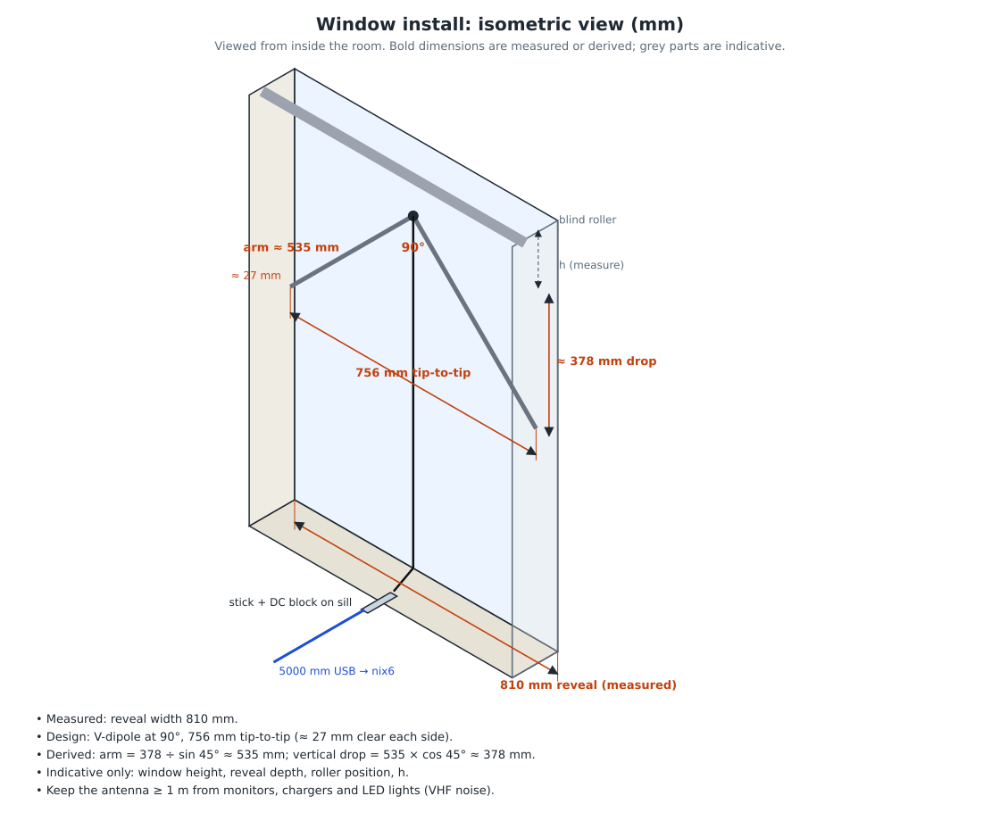
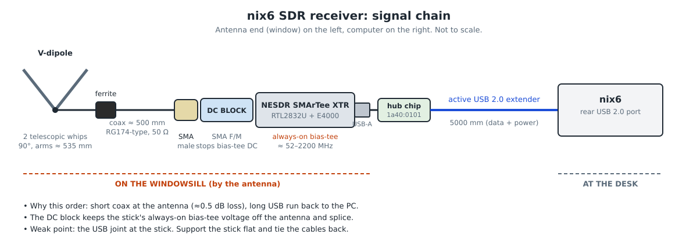
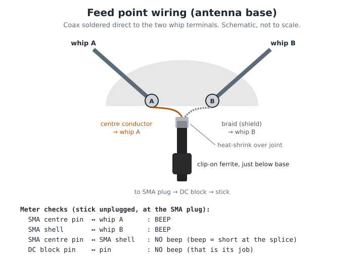

Part 1
From a stick in a laptop to ears on a window
In See what's in the air I plugged a USB radio stick into my laptop and tuned in FM with its little stock aerial. It worked, but a laptop sleeps, moves and sits wherever I left it. I wanted a receiver that was always listening, on nix6: the 2015 desktop I saved from the scrap pile (its story is Saved from the scrap pile; "nix6" is just the name I gave it, and you'll see it in my terminal prompts).
I also had an old set of indoor TV "rabbit ears": two telescopic whips on a plastic base. The easy move was to plug one into the other and see what happened. Instead I spent an evening gathering facts first, and almost every fact changed the plan.
What you'll need to follow along
- An RTL-SDR style USB stick (mine is a NooElec NESDR SMArTee XTR)
- An old aerial with telescopic whips, and a screwdriver to open its base
- A multimeter with a continuity (beep) setting, a soldering iron and some heat-shrink
- A tape measure, graph paper and a pencil
- Ubuntu and a terminal. If the terminal is new, start with Meet the terminal
Part 2
Security questions before any commands
Every project I build now starts with security questions, not features. A radio sounds harmless, but this one runs on a machine that's on all day, holds my other projects, and will soon feed the family robot, Gus. These are the answers, and they shaped the build:
plugdev group. sudo is only used once, at setup.Answering "where does the data go?" on day one is easy. Answering it after you've pushed a year of scans to a public repo is not.
Part 3
Survey before you solder
Each step below is one fact I gathered, and the decision it forced. Your facts will be different. The method is the point.
The window width, not the textbook, decided the shape of the antenna. Measure the space before you choose the design.
Your window, your numbers
Try your own. Put in the band you most want to hear, your window's width and how much clearance you want each side. It works out what a 90° V will give you.
- Ideal arm for that band
- –
- Arm that fits your window
- –
- Tip to tip
- –
- Drop, feed to tips
- –
- What that size suits best
- –
The sums behind it
Ideal arm = 143 ÷ MHz ÷ 2 metres. Tip to tip = width − 2 × clearance. In a 90° V, each arm = half the tip-to-tip ÷ sin 45°, and the drop = arm × cos 45°. My 810 mm window gives arms of about 535 mm, which suits about 134 MHz best: a bit high for FM, but the 25 stations in Part 6 say it's plenty.
Then draw it
Before buying a single part, I drew the window to scale on graph paper, then as an isometric drawing with every dimension in millimetres. Pick one datum (I used the underside of the blind roller) and measure everything from it. Bold dimensions on the drawing are measured or worked out; grey ones are only indicative.

Fill in your own before you buy anything:
Receiver model: Tuner range: MHz
Bias-tee? always on / switchable / none:
Old aerial: meter across the feed beeps? yes / no:
Target band: MHz → ideal arm: mm
Window width: mm Clearance each side: mm
Distance to nearest monitor / charger / LED light: mm
Cable run, window to PC: mm → coax or USB for the long part?
Leave out where your window faces and where you live. You don't need them for this, and they're exactly the kind of detail to keep off anything you share.
Part 4
The build
The parts, in the order the signal travels from the aerial to the PC:

| # | Part | Why it's there |
|---|---|---|
| 1 | USB radio stick (RTL2832U + E4000 tuner, about 52–2200 MHz) | The receiver. Its always-on bias-tee drove most of the decisions. |
| 2 | DC block, SMA male to SMA female, 50 Ω | Passes the radio signal, stops the bias-tee DC. |
| 3 | Coax pigtail, about 500 mm, thin 50 Ω, SMA male (not RP-SMA) | The far end is cut off and soldered into the aerial base. |
| 4 | Clip-on ferrite | Stops the outside of the coax acting as part of the aerial. |
| 5 | Old TV rabbit ears, electronics removed | Two telescopic whips set as a 90° V. |
| 6 | Heat-shrink or insulating tape | No bare braid anywhere near the joint. |
| 7 | 5 m active USB 2.0 extender | Has its own hub chip at the far end, which matters in Part 6. |
| 8 | Cable ties or Velcro | Strain relief. Also matters in Part 6. |
The stick's bias-tee is always on. The old aerial had a loop of wire across its feed. What would have happened if I'd plugged the old aerial straight in?
What would have happened
The bias-tee's DC would have gone straight round that loop: a dead short on the stick's own power supply. At best, it would have shut itself down. At worst, the stick would have been damaged. That's why the DC block goes on first, and why the loop came out.
The feed point
The coax's centre conductor goes to one whip and its braid to the other, with heat-shrink over the joint and the ferrite just below the base.

Check before power
With the stick unplugged, I checked every joint with the meter at the coax's SMA plug. Guess each answer before you test it:
| Test | Expect | If not |
|---|---|---|
| SMA centre pin ↔ whip A | Beep | Centre joint is open. Resolder. |
| SMA shell ↔ whip B | Beep | Braid joint is open. Resolder. |
| SMA centre pin ↔ SMA shell | No beep | A short at the splice. Don't plug in. |
| DC block, pin ↔ pin | No beep | That's its job. A beep means a faulty block. |
| DC block, shell ↔ shell | Beep | The screen isn't carried through. |
A multimeter costs less than the stick, and five beeps take two minutes. Check before power, every time.
Part 5
First light
First, the same two fixes as in part 1: block Ubuntu's TV driver, which grabs the stick before the radio software can, and let my normal user reach the stick without root.
# Stop the TV driver claiming the stick printf 'blacklist dvb_usb_rtl28xxu\nblacklist rtl2832_sdr\nblacklist rtl2832\n' | sudo tee /etc/modprobe.d/blacklist-rtlsdr.conf # The radio tools, and stick access without root sudo apt install rtl-sdr gqrx-sdr sudo usermod -aG plugdev "$USER" # log out and in again after this
Then plug in, and ask the computer what it sees:
$ lsusb | grep -i 0bda:2838 Bus 001 Device 024: ID 0bda:2838 Realtek Semiconductor Corp. RTL2838 DVB-T $ rtl_test -t Found 1 device(s): 0: Realtek, RTL2838UHIDIR, SN: 00000001 Using device 0: Generic RTL2832U OEM Found Elonics E4000 tuner
No sudo needed, which proves the group worked. Leaving rtl_test running for a while also counts dropped samples. Through 5 m of USB extender I lost about one sample in a million, which is normal and won't be heard.
Then gqrx, tuned to the FM band:
- Noise floor
- about −80 dB
- Strongest station above it
- about 38 dB
- Stations at least 10 dB clear
- 25
Part 6
When the ears went deaf
It worked in the morning. By the afternoon the stick had vanished. lsusb showed the extender's hub but not the stick, and the kernel's log said why, four times:
$ sudo dmesg | tail -n 15 # trimmed to the USB lines usb 1-6: New USB device found, idVendor=1a40, idProduct=0101 hub 1-6:1.0: 4 ports detected usb 1-6-port4: Cannot enable. Maybe the USB cable is bad? usb 1-6-port4: Cannot enable. Maybe the USB cable is bad? usb 1-6-port4: attempt power cycle usb 1-6-port4: unable to enumerate USB device
Read that from the top. 1-6 is the extender's hub chip, on the PC's port 6, and it came up fine. 1-6-port4 is the socket on that hub where the stick plugs in. So the 5 m cable was working. The failure was right at the far end, where the stick meets the extender.
The message blames the cable. How would you prove whether it's the stick, the extender or the joint between them, without buying anything?
Split the chain in half and test each half:
- Replug at the PC end, wait ten seconds, and read
dmesgagain. Same error, so it wasn't a one-off at boot. - Plug the stick straight into the PC, missing out the extender. If it fails there too, the stick is the problem. If it works, the extender end is.
- In my case it never got that far. When I reseated the stick firmly in the extender, it came straight up on
1-6.4, the very port that had been failing.
So nothing was broken. The stick, the DC block and the coax hang off the extender's socket like a lever, and the weight had pulled the plug just far enough out to lose the data contacts. The fix wasn't software: lay the stick flat on the sill and tie the cables back so nothing pulls on the joint.
"Maybe the USB cable is bad" was nearly right. It was the connection, not the cable. Read the device path in the error: it tells you exactly which joint failed.
The second silence: the PC fell asleep
Then it went again, with a different cause. Ubuntu put the PC to sleep, and when it woke, the stick didn't come back. Linux also likes to put quiet USB devices into a power-saving nap, and an extender's hub is exactly the sort of thing it naps. For an always-listening box, both had to stop.
# 1. Never sleep on mains power, and mask the sleep targets gsettings set org.gnome.settings-daemon.plugins.power sleep-inactive-ac-type 'nothing' sudo systemctl mask sleep.target suspend.target hibernate.target hybrid-sleep.target # 2. Keep the extender's hub and the stick awake, on every plug-in printf 'ACTION=="add", SUBSYSTEM=="usb", ATTR{idVendor}=="1a40", ATTR{idProduct}=="0101", ATTR{power/control}="on"\nACTION=="add", SUBSYSTEM=="usb", ATTR{idVendor}=="0bda", ATTR{idProduct}=="2838", ATTR{power/control}="on"\n' | sudo tee /etc/udev/rules.d/50-sdr-usb-power.rules sudo udevadm control --reload-rules
1a40:0101 is the extender's hub chip and 0bda:2838 is the stick. Yours may differ, and lsusb shows yours. Then check, replacing 1-6 and 1-6.4 with the paths from your own dmesg:
$ for d in 1-6 1-6.4; do echo "$d: $(cat /sys/bus/usb/devices/$d/power/control)"; done 1-6: on 1-6.4: on
on means "never nap". auto means Linux may put it to sleep.
Turning off sleep is right for a box that's meant to be on all the time, and wrong for a laptop. Write down how to undo it before you do it. My undo lines are in the rebuild kit in Part 7.
Part 7
Making it rebuildable
By now nix6 had a blacklist file, a udev rule, masked sleep targets, a group membership and a list of stations, all done by hand. If the drive died tomorrow, I'd never remember it all. So it went into a private code repository as a rebuild kit.
Bookmarks from a scan
Rather than tuning across the FM band by ear, I swept it with rtl_power, which measures the strength of every slice of the band and saves it to a file:
rtl_power -f 87.5M:108.5M:12.5k -g 20 -i 10 -e 2m surveys/fm_survey.csv
That's 87.5 to 108.5 MHz in 12.5 kHz slices, at fixed gain, averaged every 10 seconds, for 2 minutes. A small Python script of mine, fm_bookmarks.py, reads the file, works out the noise floor, finds every channel at least 10 dB above it, and writes them as gqrx bookmarks. It uses only Python's standard library, so there's nothing to install:
python3 tools/fm_bookmarks.py surveys/fm_survey.csv # report and preview only python3 tools/fm_bookmarks.py surveys/fm_survey.csv --install # add to gqrx, backing up first
Station names come from a small table I edit by hand. Shown here with placeholders, because a list of the stations you can receive says roughly where you live:
NAMES = {
[MHz]: "[your local station]",
[MHz]: "[a national station]",
}
The result was 25 bookmarks, in a coloured "FM-scan" group in gqrx.
One script, with a dry run
setup.sh puts everything back on a fresh install: the packages, the blacklist, the USB power rule, no sleep, the plugdev group and the bookmarks. It checks each item first and only changes what's missing, and it has a dry run that changes nothing at all:
./setup.sh --dry-run # look first: every line says "ok:" or "WOULD:" ./setup.sh # then apply
$ ./setup.sh --dry-run == 1. Packages == ok: rtl-sdr installed ok: gqrx-sdr installed == 2. TV-driver blacklist == ok: /etc/modprobe.d/blacklist-rtlsdr.conf up to date … (dry run - nothing changed)
It refuses to run as root, and it backs up existing gqrx bookmarks before replacing them. The same file also lists the undo commands for every system change.
What stays out of the repository
Raw scans never go into git. Part of the reason is size, since an overnight sweep can run to hundreds of megabytes. The bigger reason is privacy: a scan is a fingerprint of where you live. Which stations come in strongest, which TV channels, and how loud they are can narrow down your location. So the repository's ignore file starts like this:
# Raw survey data stays local (large + location fingerprint)
surveys/
*.csv
!gqrx/bookmarks.csv
Before every push, I run my own pre-push check, which scans the changes for a private list of words that must never go public. Even in a private repository, that's the habit.
If you did it by hand once, you'll get it wrong by hand next time. Write it down as a script that can show you what it would do before it does it.
Part 8
What the ears can hear
With the aerial up and nix6 never sleeping, I swept three bands with rtl_power, looking at the strength of each band over time rather than listening:
- FM stations, 87.5–108.5 MHz
- 25
- Freeview multiplexes, above the floor
- 13–16 dB
- Marine safety broadcast, length
- about 16 min
Freeview. The stick can't decode digital TV, but it can see it. Each TV multiplex shows up as a flat-topped slab 8 MHz wide, standing above the noise. I averaged each UK TV channel and sorted the list; the multiplexes stood clear of the empty channels by 13 to 16 dB, on an aerial that isn't even built for UHF. To work out which transmitter yours come from, put your postcode into an official Freeview coverage checker and match its channel list against your strongest channels. I've left mine out on purpose:
rtl_power -f 470M:694M:100k -g 30 -i 10 -e 2m surveys/uhf_survey.csv
awk -F', ' '{low=$3; step=$5; for(i=7;i<=NF;i++){f=low+(i-7)*step; if(f<470e6||f>=694e6) continue; ch=int((f-470e6)/8e6)+21; s[ch]+=$i; n[ch]++}} END{for(c in s) printf "ch%-3d %6.1f MHz %7.1f dB\n", c, 306+8*c, s[c]/n[c]}' surveys/uhf_survey.csv | sort -k4,4gr
That prints one line per channel, from 21 to 48, strongest first. The empty channels at the bottom are your noise floor. A group of channels well above it is your local multiplexes.
The marine band. HM Coastguard broadcasts maritime safety information, such as weather and navigation warnings, on a schedule for every vessel at sea. A sweep across the marine VHF band showed one as a solid block of activity lasting about 16 minutes, standing out clearly from a band that's otherwise quiet. I've left out the channel and time, because together with the station they say which stretch of coast I'm on.
Part 9
Every command I used
In the order they came up. The ones marked sudo change the system; everything else only reads.
| Command | What it does | When |
|---|---|---|
lsusb | Lists USB devices. Look for 0bda:2838. | First light, faults |
rtl_test -t | Finds the stick and names its tuner, without root. | First light |
sudo tee /etc/modprobe.d/… | Blocks the TV driver that grabs the stick. | Setup, once |
sudo usermod -aG plugdev "$USER" | Lets your user use the stick without root. | Setup, once |
gqrx | The radio itself: tune, listen, bookmark. | Every day |
sudo dmesg | tail | The kernel's log. Where "Cannot enable" showed up. | Faults |
cat /sys/bus/usb/devices/…/power/control | Shows if a USB device may nap (auto) or not (on). | Faults |
sudo tee /etc/udev/rules.d/… and sudo udevadm control --reload-rules | Keeps the hub and stick awake on every plug-in. | Setup, once |
gsettings set … and sudo systemctl mask … | Stops the PC sleeping. | Setup, once |
rtl_power -f … | Sweeps a band and logs its strength to a CSV file. | Surveys |
awk … | Turns a sweep into one line per TV channel. | Surveys |
python3 tools/fm_bookmarks.py … | Turns an FM sweep into gqrx bookmarks. | Surveys |
./setup.sh --dry-run | Shows what a rebuild would change, and changes nothing. | After a reinstall |
pgrep -a -f 'gqrx|rtl_' | Is anything already using the stick? Only one program can at a time. | Before every sweep |
Part 10
What it could become
The receiver is the foundation. These are the builds it opens up, roughly in the order I want to try them:
- A radio station for the whole house. Digital (DAB) radio decoded on nix6 and streamed to phones and the old tablet, home-only, behind the firewall. No apps, no accounts and no tracking.
- Freeview, properly. The survey says the signal's there. A Raspberry Pi with a TV tuner board and a real UHF aerial in the loft could serve TV round the house, again home-only and password-protected.
- A map of everything in range. One long sweep across everything the stick covers, turned into bookmarks the way the FM ones were. It needs plenty of disk, and the raw data stays out of git.
- A second aerial. A long-wire aerial made from spare doorbell wire, and perhaps a receiver that reaches the lower bands this stick can't.
- Ears for Gus. A radio card on the family robot's dashboard: what's on, how strong it is, and whether the stick is still awake.
- Storm watching. Lightning crackles across the VHF band. A sweep logged during a thunderstorm could show it as it passes.
Each one gets the same treatment: security questions first, a survey before buying anything, and a write-up here.
What came out of it
Measure twice, solder once
Survey first
One spec-sheet line and one tape measure changed the design before I spent a penny. The window decided the shape.
Read the device path
1-6-port4 pointed at one joint on a 5 m run. The fault was mechanical, and the log said where.
A scan is a fingerprint
Script the setup and keep it private. Keep raw scans out of git altogether, because they say where you live.
Built your own window aerial, or spotted a mistake? Tell me. Corrections are genuinely welcome. 10-4.